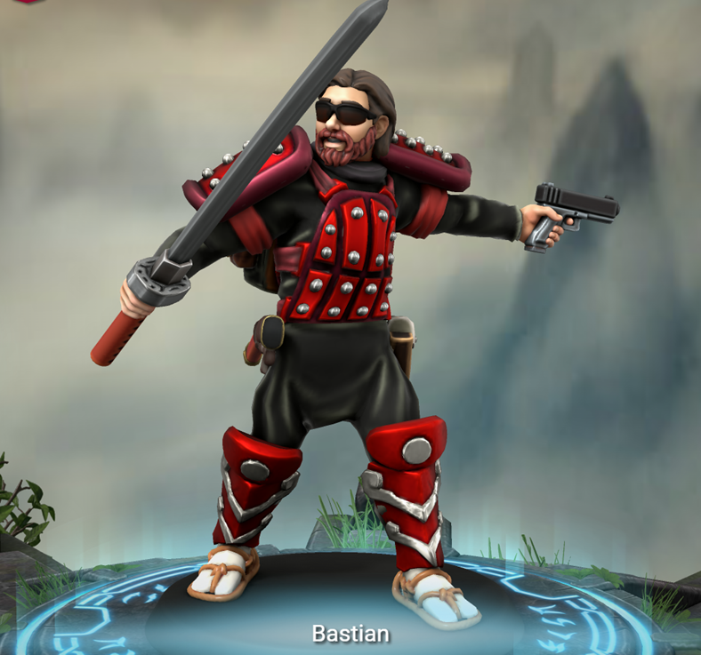
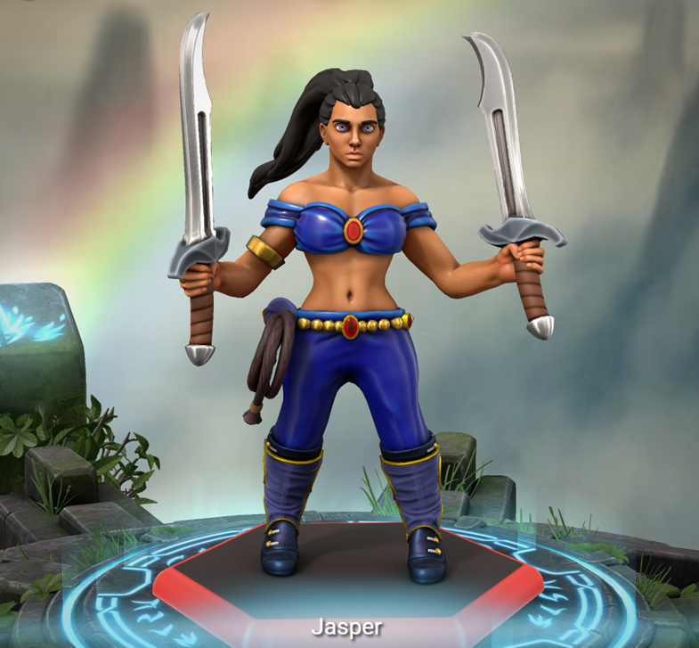
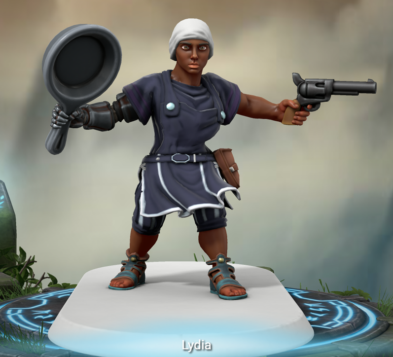
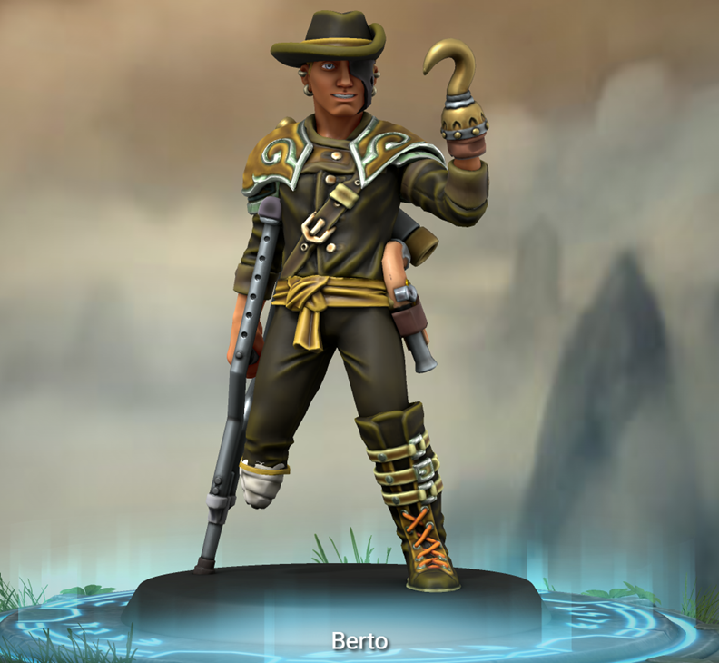

Capitán de los piratas escorpión, diseñador y constructor del barco, ejerce la piratería no solo por la aventura y la sensación de libertad como pirata, principalmente ejerce como pirata por rebeldía y resistencia ante la tiranía del gobierno mundial corrupto de One Piece. Consumió una fruta del diablo artificial de la araña modelo escorpión emperador, la cual le permite tener más brazos y una cola de escorpión, de la cual secreta un veneno capas de paralizar las extremidades una persona en segundos y si no se suministra el antídoto en menos de una hora lo siguiente en paralizarse es el corazón. Posee una buena puntería con sus 4 flintlocks, los cuales puede usar al mismo tiempo, también una gran fuerza y agilidad debida a su fruta tipo Zoan. También posee Haki de armadura, y de observación (es lo suficientemente capaz no para leer la mente pero si para saber si su interlocutor miente y capaz de predecir los movimientos de sus enemigos).
Nació en un país del mar del sur perteneciente al gobierno mundial con mucho campo y recursos sumamente óptimos para la cosecha de la caña de azúcar y para la cría del ganado, pero con mucha pobreza debido a los tributos para los nobles mundiales sumado a los impuestos que se quedaba el rey del país, a pesar de ello él tenía una vida normal debido a que sus padres eran los contadores del rey y no le falto nada en la vida y pudieron pagarle los mejores estudios, como resultado se convirtió en un científico no muy destacado (pero competente), que trabajo con el proyecto de armas vivientes del científico más listo del mundo (Vegapunk), el proyecto de los pacifistas, precisamente en su programación. Desafortunadamente dejo su trabajo cuando se enteró que sus padres murieron en un ataque pirata a su país; indago en lo sucedido y descubrió que los piratas fueron contratados por el rey del país para eliminar a sus padres para que no hicieran pública las pruebas de que el rey se quedó con una parte significativa para el de los tributos al gobierno mundial. Uno de los que sobrevivieron al ataque orquestado por el rey, era un pirata retirado que qué le enseño a pelear y el uso del Haki de observación y de armadura, con eso se vengó de los responsables de la muerte de sus padres incluso del rey pero eso le dio una recompensa por su cabeza de 40 millones. Entonces construyo un barco pirata cuando se infiltro en una base del gobierno que tenía una máquina de ensamblaje y construcción automática experimental, que supo operar debido a sus conocimientos de programación. Zarpo en el barco al cual nombró: Escorpión Azabache, recluto a su amigo de la infancia como primer oficial; Bastian (que era cadete en el castillo del rey del país, y quedo sin empleo con su muerte, aunque no le caía bien el rey tampoco) y empezó su viaje reclutando varios amigos que hizo en el viaje: Catrina (la timonel), la doctora Musume, Jasper (la navegante) y Lydia (la cocinera), también otros subordinados como Berto (el vigía), y otros 6 piratas.

Espadachín y vice-capitán de los piratas escorpión, es excelente en el manejo de la Katana, y es cinturón negro en Karate, y algunas veces se le ha visto usar una pistola cuando la situación lo requiere. Posee Haki de armadura.
Nació en un país del mar del sur perteneciente al gobierno mundial con mucho campo y recursos sumamente óptimos para la cosecha de la caña de azúcar y para la cría del ganado, pero con mucha pobreza debido a los tributos para los nobles mundiales sumado a los impuestos que se quedaba el rey del país, a pesar de ello él tenía una vida normal debido a que su padre era asistente del Rey. No estudio en una universidad como su amigo Mariano, pero si entreno en un dojo dirigido por un samurái del país de Wano. Al cumplir los 18 trabajo como cadete de la guardia del castillo del rey, pero lo dejo cuando su padre murió en el mismo ataque orquestado por el rey en que murieron los padres de Mariano, justos mataron al rey y atacaron una base de la Marina donde consiguieron su barco: el Escorpión Azabache, y empezaron sus aventuras como piratas.

Timonel de los piratas escorpión, posee una fuerza sobrehumana una altura de más 2 metros y una gran destreza con las armas; principalmente con las hachas, también posee una increíble habilidad con el timón y el manejo del barco. Sabe usar el Haki de Armadura.
Es hija de una pareja de gigantes provenientes de Elbaf, pero la abandonaron en un orfanato del mar del Sur por nacer con gigantismo a la inversa (es hija de gigantes pero tiene el tamaño de un humano normal), a pesar de tener e tamaño de una persona normal, pero bastante alta y fornida, creció con una fuerza desmedida y un temperamento muy conflictivo y se metió en muchas peleas las cuales acabaron mal para todos (principalmente para sus oponentes), como resultado la echaron de su orfanato cuando se hartaron de ella a los 16 años. Entonces empezó a ganarse la vida como mercenaria, a veces la contrataron delincuentes, otras veces cobro las recompensas de los delincuentes que vencía, con unos pocos años después se ganó la suficiente reputación para que unos agentes del gobierno la contrataran para robar una investigación que permitiría sanar a los marines en combate. Ella acepto aunque le parecía sospechoso el trato, cuando fue al laboratorio donde le dijeron que estaba lo que tenía que saquear se encontró con Musume y ella logro vencerla y esta la interrogo, y al lograr lo que nunca nadie le hizo en su vida, le revelo quienes la contrataron para robar sus investigaciones. Entonces Musume la libero y dejo que se vaya, Catrina sintió que su código de honor la obligaba a deberle la vida a Musume por esta perdonarle la suya, entonces le sugirió que juntas fueran a acabar con los agentes que la contrataron; entonces al aceptar Musume fueron juntas a buscar a los agentes (en el camino se contaron cosas una de la otra y se hicieron amigas); cuando llegaron encontraron a los agentes siendo atacados por Mariano (un pirata buscado que había visto en un cartel de se busca unos años atrás) y un espadachín que lo acompañaba (Bastian), las dos aprovecharon la situación y se unieron a la pelea y entre los 4 acabaron con los con los agentes. Entonces al acabar con todos: Mariano les ofreció formar una tripulación, ella nunca había pensado en ser pirata, pero últimamente no tenía mucho trabajo como mercenaria, asi que acepto y convenció a su nueva amiga de ser parte también.

Navegante de los piratas escorpión, conoce bien cómo funciona el clima las corrientes marinas y todo lo necesario para navegar en el mundo de One Piece, entreno desde pequeña para defenderse mediante 2 cimitarras y un látigo.
Era la princesa de un país no perteneciente al gobierno mundial, por lo cual su padre, el rey del país, tenía que pagarle a los marines con lo poco que podía el reino para que estos no los atacaran (pues no tenían derechos humanos los que no pertenecían al gobierno mundial), pero un día los Marines aumentaron sus exigencias y el padre de Jasper decidió venderla como esclava a los Marines para completar la cuota de sus exigencias; ella se resistió pero al final fue sometida y fue llevada a un barco para ser vendida a los nobles mundiales. Afortunadamente en el barco que la transportaba estaba su prima Lydia (que años antes entro a trabajar como cocinera para la marina) que le ayudo a escapar de su cautiverio, las 2 pudieron escapar gracias a que el barco de Marina estaba siendo atacado por Mariano, Bastian, Catrina y Musume. Como no tenían lugar a donde ir; se ofrecieron a ser la navegante y cocinera de los piratas escorpión.

Medico de los piratas escorpión; no posee una gran fuerza física, pero si una agilidad notable, una buena mente analítica y estratégica, y un gran conocimiento médico y científico. También posee buena puntería a medio alcance con su ballesta y habilidad al usar sus químicos y medicamentos para pelear o ayudar a la tripulación.
Era hija de un doctor y científico llamado Horacio Neutan, que descubrió las semillas hormonales que cuando se mesclan con ciertos químicos forman un compuesto capas de curar cualquier enfermedad, veneno o herida, a cambio de años de vida de la persona que injiera el medicamento, dependiendo del tipo o gravedad de la aflicción. Su padre murió en un accidente y ella decidió continuar su investigación de las semillas hormonales, hasta que agentes del gobierno enviaron a Catrina a robar su investigación, pero gracias su ingenio y una compuesto desarrollado por ella capas de paralizar las extremidades por unos pocos minutos; logro someter a Catrina. Cuando Catrina le revelo quienes la contrataron para robar su investigación, Musume le perdonó la vida y ambas fueron acabar con los agentes del gobierno que encargaron el robo, pero cuando llegaron se encontraron con Mariano y su compañero Bastian, luchando con los agentes del gobierno, las dos se unieron a la pelea y al acabar Mariano les ofreció formar una tripulación de piratas, Catrina acepto sin pensarlo, Musume lo pensó por un momento, pero Catrina la convenció al decirle que al irse al mar podría encontrar nuevos conocimientos y personas con las que probar sus medicamentos y sustancias. Entonces ambas aceptaron y los piratas escorpión obtuvieron una timonel y una doctora para la tripulación.

Cocinera de los piratas escorpión, es una buena chef especialista en curry japonés, para pelear utiliza una sartén hecha de kairoseki (o piedra marina) y un revolver que le cedió su padre al morir. Tiene un brazo artificial mecánico debido que pedio su brazo derecho en una pelea. También posee una buena agilidad y reflejos, sumado que posee Haki de observación y de armadura.
Era la sobrina del rey de un país no perteneciente al gobierno mundial, por lo cual su tío, el rey del país, tenía que pagarle a los marines con lo poco que podía el reino para que estos no los atacaran (pues no tenían derechos humanos los que no pertenecían al gobierno mundial), un día a ella se le ocurrió que podía pagar parte del pago a los marines, trabajando como cocinera en uno de sus buques de guerra. Ella trabajo varios años para la marina hasta que su prima Jasper fue tomada como esclava, entonces le puso un sedante a la comida de los custodios de su prima, y la libero para que ambas se escabulleran. Cuando estaban a punto de ser descubiertas: el buque en el que estaban fue atacado por Mariano, Bastian, Catrina y Musume. Como no tenían lugar a donde ir; se ofrecieron a ser la navegante y cocinera de los piratas escorpión.

Vigía de los piratas escorpión; debido a su falta de la pierna derecha y su mano izquierda, no puede realizar otra función o ayudar de otra manera en el barco. Se queda todo el tiempo en el puesto de observación, observando si hay otros barcos o islas a la cercanía y nunca baja debido a que no le es posible sin ayuda, sus compañeros le suben la comida y agua 3 veces al día.
Antes de ser pirata era el líder de un grupo de bandidos compuesto por 13 miembros (el mismo y 12 subordinados); la banda era conocida como los 13 mala suerte (o los bad luck thirteen en inglés), realizaron varios atracos y muchas emboscadas a caravanas de viajeros y comerciantes, tantas que Berto recibió una recompensa por su cabeza de 5 millones, con todo lo robado en varios años les alcanzó para comprar un barco para convertirse en piratas y realizar sus operaciones en el mar u otros territorios, desafortunadamente no muchos días después de zarpar fueron interceptados por la marina, y aunque lucharon ferozmente y con todo lo que tenían; los marines eran más fuertes pues estaban mejor entrenados, como resultado Berto perdió su mano izquierda, su pierna derecha y a 6 de sus compañeros (pasaron de ser 13 a 7). Berto y sus subordinados restantes fueron sometidos; a él lo llevarían Impel Down y los demás serian vendidos como esclavos, pero por suerte el buque que los transportaba fue atacado por Mariano y sus amigos Bastian, Catrina, Lydia, Jasper y la doctora Musume; que los liberaron y les ofrecieron ser parte de los piratas escorpión. Ellos aceptaron y Berto pasó de ser el capitán de los 13 mala suerte a ser el vigía de una tripulación de ahora 13 piratas.